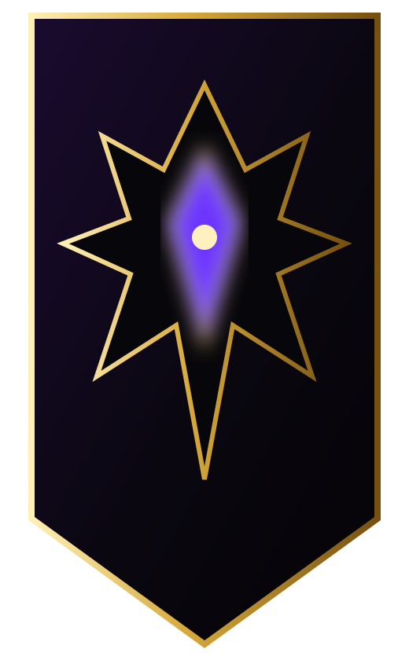
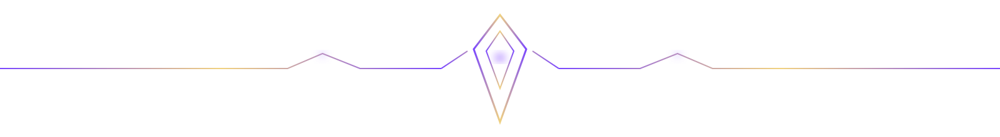
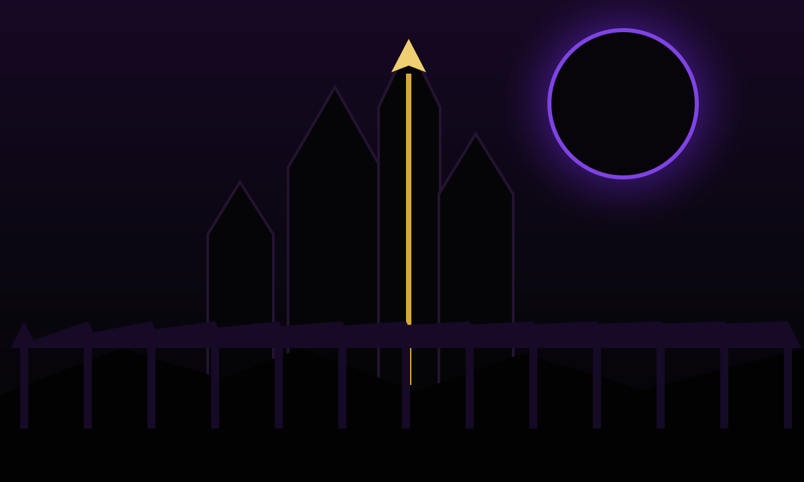

OBSIDIAN REIGN
CONQUER TOGETHER. OR DIE SOMEWHERE ELSE.
A launch-built Asmodian legion forged for coordinated progression, siege warfare, PvP pressure, raids, and the long game after launch-week hype fades.

FIELD REPORTS
Latest News
OPERATIONS
Upcoming Raids
THE LEGION
Who We Are
Obsidian Reign is a long-term Asmodian guild built around discipline, ambition, camaraderie, and showing up when it matters.

THE STANDARD
“Power is temporary. Reputation survives the patch notes.”
We want organized endgame players without turning the guild into a second job. Be prepared. Be reliable. Help the person beside you.
OUR WARRIORS
Featured Roster
CURRENT RECRUITMENT
BUILD THE FIRST WAR COHORT
We are assembling launch groups now. Every class is welcome, with special interest in players who want organized raids, siege warfare, PvP groups, and leadership responsibility.
LIVE COMMAND
THE WAR ROOM
Discord is the operational center for launch planning, grouping, announcements, voice comms, raid sign-ups, and guild social activity.